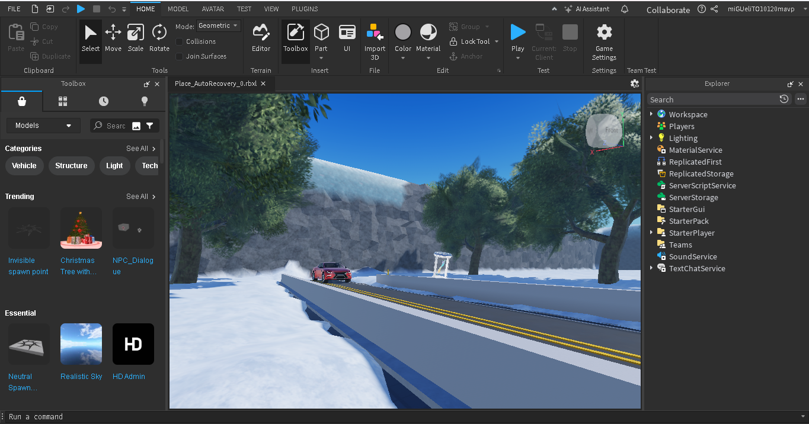
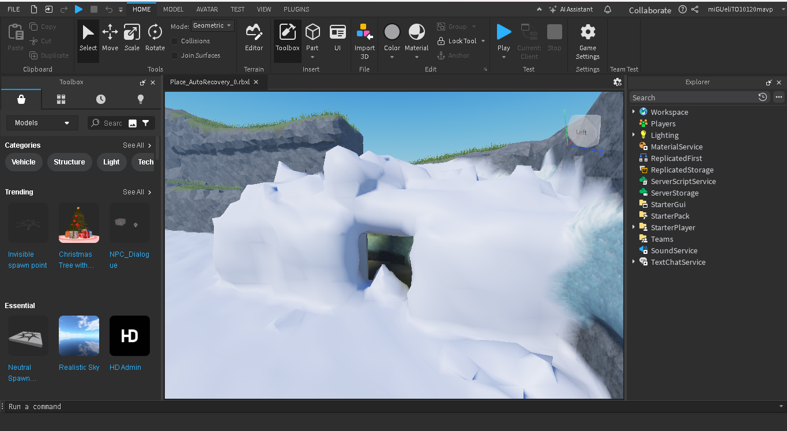
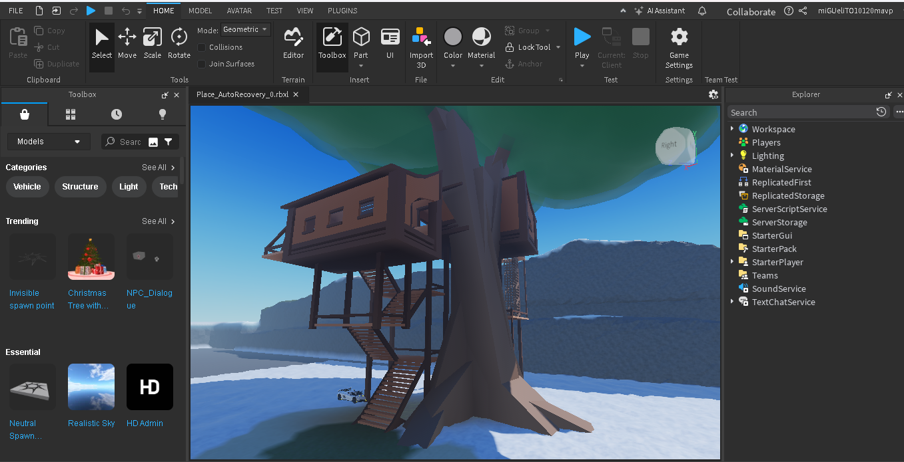
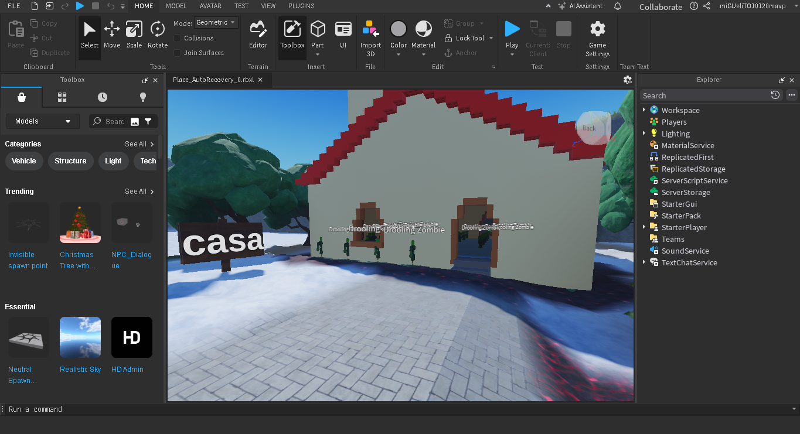

Creación de juegos en Roblox Studio utilizando el lenguaje Lua.
Lo que aprenderás
Uso de Roblox Studio.

Al comenzar Roblox studio empezamos a utilizar gadget predeterminados y a crearlos usando el panel superior.
Diseño de mapas y niveles.

Creamos pasadizos y cuartos camuflados con el entorno con ayuda de la herramienta Terrenos.

Probamos estructuras ya predeterminadas de Roblox sacadas de la Tolbox.

Modificamos las estructuras predeterminadas de Roblox a nuestro gusto con las herramientas del panel y la Tolbox.